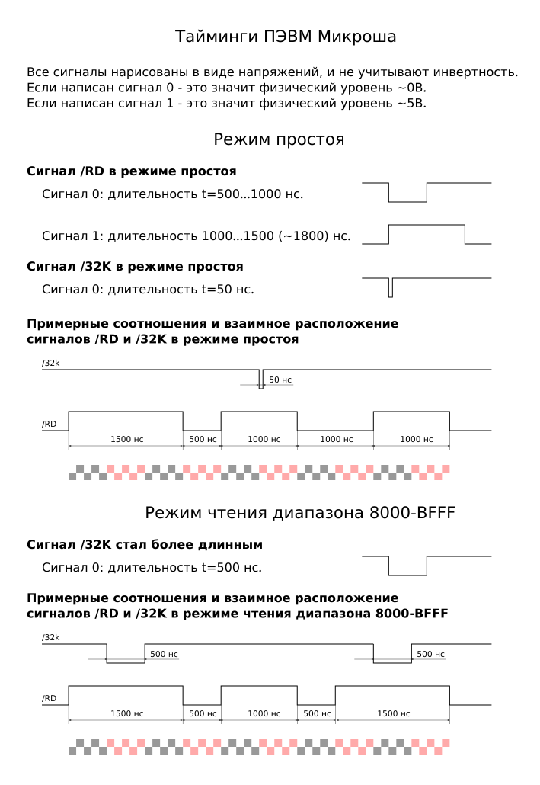

С помощью осциллографа были замерены тайминги сигналов /RD и /32K. Данные тайминги нужно учитывать при разработке новых устройств, подключаемых к разъему "Внутренний интерфейс".
Предполагается, что устройство, подключаемое к данному разъему, должно обслуживать диапазон адресов 8000-BFFFh.
Далее в виде картинки приведны результаты замеров. На этой картинке режим простоя - это режим, когда компьютер просто включен и на нем не выполняется никаких действий. Режим чтения диапазона 8000-BFFFh - это момент, когда запущена команда
D8000,BFFF
Вот, непосредстванно, сами результаты замеров:

К данной записи так же прикреплен svg-файл исходника этой картинки.